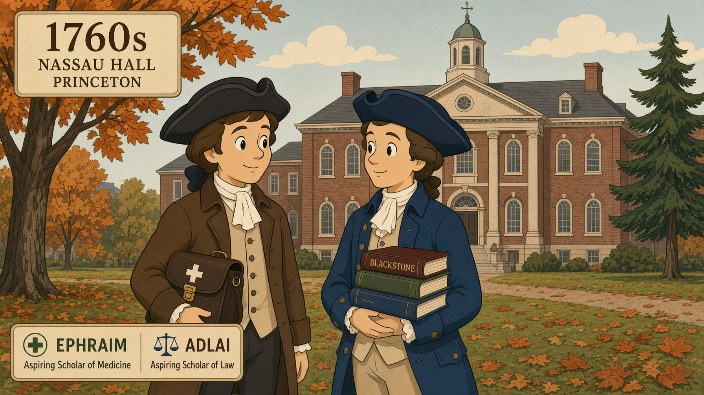

Founding-era understanding · through their pew
The reformer of faith, then the slate

A later civics hall can name Federalists and Anti-Federalists. This river does not start there. It starts in a meeting house.
John Witherspoon — minister, college president, signer — taught moral philosophy at Nassau Hall. His presidency begins in 1768, the year this house’s cousins Ephraim Brevard and Adlai Osborne stand in Princetonians 1748–1768. The children call Eph and Adlai by those names so the school is a cousin, not a cloud.
Rights here are an endowment. A gift named by the Creator, copied on a slate, then kept in offices. They are not a catalog a later party hands you.
How the children hear it
Bell hangs at Hopewell. Centre is the other pew — Brevard, Osborne, the namesake William Lee. The Declaration will say men are endowed by their Creator. That sentence is not invented in a city the children have never seen. It is the same grammar their school already used: a gift, then a duty, then a magistrate who can be named.
Brevard holds the Mecklenburg pen. That is the enumeration on this river: names first, then a resolve that the king will not be the source of the gift. Osborne keeps ink. Davidson wears a coat too big. Wilson daughters are hinges. Polk is tasked to keep Bell’s cousin from being melted into a gun. Graham sits sheriff before anyone sits governor.
What this page will not do
It will not pretend Hillsdale is the first teacher. Hillsdale is a later map. It will not put a fight on screen. It will not make Witherspoon a cartoon uncle who lives on the Catawba. He taught at Nassau. The cousins walked home with the lesson. The pew is how you look through their lens.
Copy tonight
Endowed means given, not voted into being. Recite in the morning: Brevard and Osborne sat the school in 1768. Then open the house and say a cousin’s name.